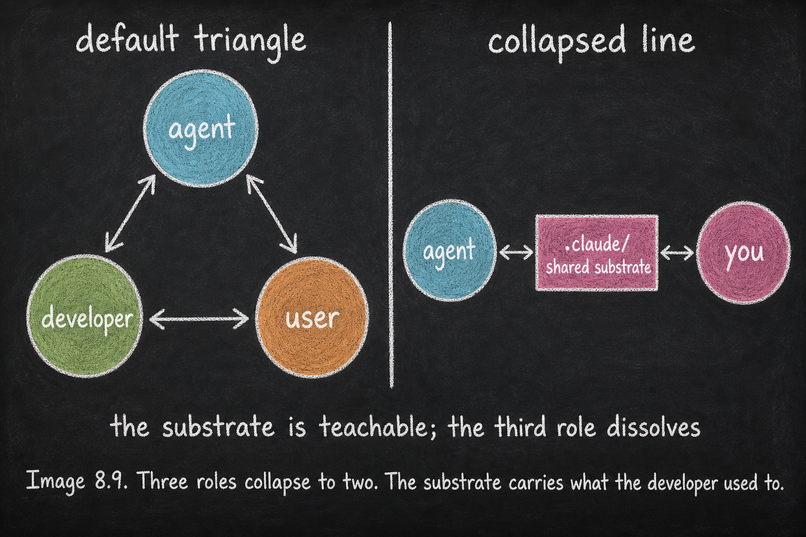

The Seed Is Yours
Essay 8.9 — From Apprentice to Architect, Part 9 of 9.
Essay 8.8 closed the Tier-3 recursion — a system that safely modifies itself, under your direction, in your filesystem, with rollback as the default when tests fail. The architecture is in your hands. This essay closes the series.
Open Source, MIT, Free Forever
The Hadosh Academy seed agent is open source. MIT licensed. Free to use, free to fork, free to extend. There is no SaaS layer between you and your seed. No server holds your knowledge directory. No company controls your brain. ⓘ
When you install a seed on your laptop, it becomes yours. The architecture is the architecture I have described across this series. But the cycles are yours. The patterns it codifies, the voices it speaks, the hooks it hardens — they will be the patterns your work surfaces, the voices your judgment shapes, the hooks your edge cases call into existence. Your first jobs will be stage 1 — collaborative, learning-mode, slow on purpose. Some of those jobs will mature into stage 2, then stage 3, and a few — for the work shapes that need real customization — into stage 4 plugins that exist nowhere else but in your seed. ⓘ
Two operators with two seeds, six months in, will have brains that are visibly different. The architectures are the same. The lived seeds are not. That is the design. ⓘ
The Triangle Collapses to Two
This is what changes when the architecture itself is teachable. The agent-developer-user triangle most software defaults to — where one role builds, another configures, a third uses — collapses to two: the agent and you. The substrate is portable enough that the user can be the architect. Call it the PowerPoint of seed agents: a complex artifact made authorable by enough high-level structural understanding, without anyone having to write the underlying machinery. ⓘ
Essay 5.1 gave you the substrate. Essay 6.1 gave you the cognitive cycle that uses it. Essay 7.1 gave you the template for growing it. This essay closes the loop: the maturation arc that takes a stage-1 conversation into a stage-4 plugin is what makes your seed yours. The seed is the architecture; you are the architect. ⓘ

The Academy Exists Because Craft Benefits From Community
The Academy exists because growing a seed well is a craft, and craft benefits from community. Other operators are growing their own seeds. They are running into patterns you will recognize and patterns you have not seen yet. The knowledge they are accumulating is not interchangeable with yours — but the recipes for accumulating it well are shareable, and that is what we are gathered to share. When your seed finishes a job that changed one of the shipped plugins' code, that job cannot reach idle until it asks you the upstream-reporting question: it shows you the exact issue text it would file and offers a four-step ladder — skip it, file the issue (the seed submits it for you on approval), reword the issue first, or open a real pull request (which the seed turns into its own follow-up job rather than opening on its own). The shared substrate stays alive because every operator’s seed offers to contribute back through that same channel. ⓘ
A consulting practice’s seed, six months in, may have hardened a [CLIENT-CONFLICT-CHECK] hook that the practice’s principal designed and the seed authored. When the practice’s seed reports that pattern back upstream, the public seed grows wider — not by absorbing the practice’s confidential data, but by absorbing the recipe for that kind of customization. What the architecture enforces is only the asking: a plugin-code job cannot finish without surfacing the question. Whether to actually report stays the operator’s call — Skip is always a valid answer — so a seed whose operator keeps choosing Skip keeps its hardened patterns private to that one seed. The contribution is friction-bounded, not enforcement-bounded; the seed makes the offer, the operator decides. ⓘ
The Close
Your brain was never built for the pace this work moves at. You knew that from Essay 3. What you have now is something built for that pace, designed to grow with you, encoded into a folder you control, governed by disciplines that hold across time and across sessions and across the model rolling forward.
The seed is yours. The Academy is here.
Build the brain.
Essay 8.9 — From Apprentice to Architect, Part 9 of 9.
Previous: Essay 8.8 — A System That Safely Modifies Itself — the Tier-3 close, the recursive lock ceremony, and the rollback substrate.
The series ends here. The seed begins where you start it. The public repo is the next step — clone, install, and run your first stage-1 cycle.
Comments